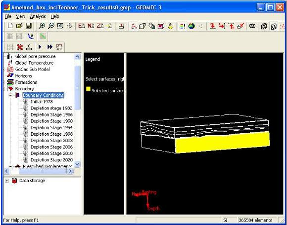

In a tetrahedron model it is possible to change boundary conditions manually.
Before boundary conditions can be specified some prerequisites must have been satisfied, see Boundary conditions.
Open the tree node "Boundary", and select its sub node "Boundary Conditions". The model will be drawn in the Drawing area, showing only the separations between bodies at the sides and bottom of the model. This splits up the outer surfaces into faces. Each face can be selected by left-clicking on it. A selected face is filled in yellow. See Figure.

To change the supports, select the face for which you want to specify the boundary conditions, and right-click on it. A context sensitive menu containing the option "Attributes" appears. Select the option, and the Boundary Face Attributes dialog appears. Unless the option "Apply to all outer faces" is specified in the dialog, this process must be repeated for each face.
The user can set stress boundary conditions and deformation boundary conditions, that depend on the chosen support directions. Remember that you can not prescribe a deformation AND a stress at the same time. (This is only possible when there are interface elements on the boundary). A supported direction can hence have a displacement (not a stress) and an unsupported direction can have a stress (and not a deformation)
Prescribed stress tensors, strain tensors and deformation vectors will be decomposed in the orientation of the Faces, where only the valid components will be applied as boundary conditions.